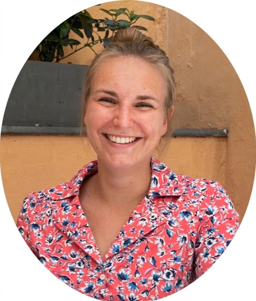

Hi! I am Camille and I am an Assistant Professor in the department of Sociology at Trinity College Dublin.
I am a sociologist of gender, work, and stratification, using sociological and demographic perspectives to investigate how gendered norms and institutional contexts shape inequalities in labour market outcomes, work-family arrangements, and health across social contexts, time, and cohorts. More specifically, I explore occupational characteristics as an aspect of how work produces inequality. I use quantitative methods to investigate how the content and context of work interact with individual characteristics i.e. gender and motherhood status to create heterogeneity in work-related outcomes and health.
Previously I was a Research Fellow at the Department of Political and Social Sciences of the European University Institute (Sept 2025-August 2026) and before a fellow of the Kohli Foundation for Sociology in the Max Weber Programme for Postdoctoral Studies at the Department of Political and Social Sciences of the European University Institute (Sept 2023 to August 2025).
I hold a PhD in Sociology from Cornell University (2017-2023), a MSc in Sociology from Oxford University (2016-2017) and a Bachelor of Arts and Sciences from University College London (Major in Social Sciences; Minor in Sciences and Engineering) (2012-2015).